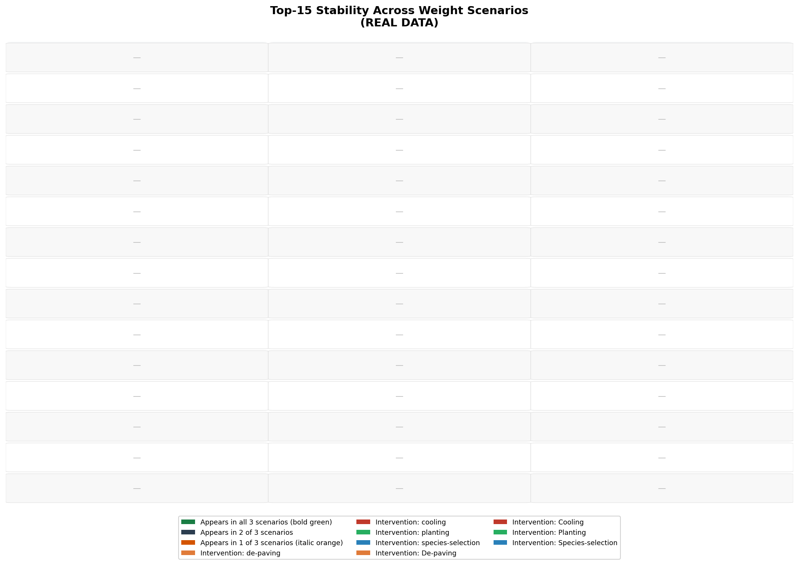

From Ecological Challenge to
Public Health Solution
A CRISP-DM cycle to transform a biodiversity challenge into an urban planning tool that improves air quality and residents' lives.
Barcelona is already removing plane trees.
The only question is: in what order?
Reduce plane trees from 27.45% to less than 12% of total urban trees.
43,722 specimens today. ~56% will be removed by 2037.
Reason stated by the city council: biodiversity and monoculture risk.
The Platanus is responsible for ~46% of Barcelona's annual pollen index (Gabarra et al. 2002). Removing a plane tree also alleviates the allergenic burden, but the city council does not sequence the felling with this criterion. We provide the missing criterion.
Our decision objective
In what spatial order should the city council fell the plane trees so that each removal alleviates the greatest possible pollen exposure for residents in the area?
User: planning analyst at Parks and Gardens.
Unit of action: census section → street-level work list.
A data-driven approach for a public health decision.
We propose a model to create a priority ranking that combines the allergen source (where mature trees are) with exposure (where people live).
To do this, we follow the CRISP-DM framework, an industry standard for managing data science projects in a rigorous, iterative, and transparent way.
The original idea: an "ecosystem health" map.
Our first hypothesis was that we could prioritize areas for ecological intervention (not felling) based on the health of the soil's mycorrhizal networks, which connect tree roots.
Initial Thesis (Cycle A)
Tree species diversity and soil connectivity (unsealed surface) predict the health of the fungal network, which is key to tree resilience. We could create a score map to guide tree planting and improve this network.
This approach, while ecologically interesting, did not directly address the city council's most urgent need: sequencing the already planned felling of plane trees.
Connecting trees to the ground.
We integrated multiple open data sources from the Barcelona City Council and the Cadastre to build our analytical dataset.
- Tree inventory: 189,000 geolocated trees with data on species, age (maturity), and condition.
- Cadastral data: Sealed surface (pavement) and unsealed surface (permeable soil).
- Demographic data: Residential population by census section.
- Ecological data: Types of fungi (AM/EM) associated with each tree species.

A promising model with a spectacular result.
We built a linear model to predict our "mycorrhizal health score" from ecological and urban variables. The initial performance was exceptional.
The result seemed to validate our thesis with very high accuracy. The engineering team celebrated. The evaluation team, not so much.
The model was a tautology.
The problem was not in the code, but in the definition of the target. The variable we were trying to predict (composite_score_B) was a linear combination of the same variables we used as predictors.
We validated a circle.
The model was not learning any real relationship about soil fungi. It was simply learning to reconstruct its own input. The R² of 0.877 only measured the stability of the data normalization, not a real insight.
Three independent lines of evidence.
To confirm our suspicions, we ran the falsification tests we had pre-registered before building the model.
Line 1 — Internal Redundancy
91% of the variance of our "ecological index" was explained by a single abiotic variable. Biotic factors were irrelevant (r < 0.2). Our map was, in essence, a map of asphalt.
Line 2 — Pre-registered External Test
We used 1,024 fungi observations from GBIF as external ground truth. Our block of "biotic" variables added no predictive power over an abiotic null model (ΔadjR² = -0.02).
The final evidence and the right decision.
Line 3 — Literature Review (44 sources)
We found counter-evidence. In Amsterdam, the fungal diversity of plane trees increased with urbanization, the opposite of our hypothesis. The mechanism was, at the very least, questionable.
We kept what the data supports.
We discarded what it doesn't.
Mycorrhizal Priority
Classify cells for fungal network recovery. Falsified. It remains as a hypothesis for future work with measured soil data.
Three independent FAILURES
Internal R² of 0.91 with sealed surface · External p-value of 0.99 · Counter-evidence in literature. Decision: STOP with ~75–80% confidence.
Allergen Exposure Priority
Same tree inventory. New question: where to sequence the felling the city is already doing, for maximum pollen relief.
- SOURCE = plane tree density × maturity score (std min-max)
- EXPOSURE = residential population, interpolated (std min-max)
- Multiplicative — non-compensatory by design (corrects the flaw of Cycle A)
Why multiplicative?
A weighted sum (Cycle A) allows a high-variance component to dominate. A product is non-compensatory: a cell with no plane trees or no people cannot score high. There are no hidden weights to misconfigure.
Every pre-registered test passed.
| Test | Criterion | Result |
|---|---|---|
| T1 — Reorders vs. simple density | J₁₅ < 0.70 | J₁₅ = 0.30 ✓ |
| T2 — Non-redundant layers | both material | corr(src, exp) = 0.30 ✓ |
| T3 — Exposure load, top-15 | beats density | +4.6 pp margin ✓ |
| T4 — Sensitivity (3 arms) | holds in ≥ 2 | 3/3 ✓ |
| Pollen source validation | measured series | INFEASIBLE — proxy, declared |
Honestly rejected layers
Age prevalence — Spearman 0.999 vs population, redundant Sex — women 1.6× antihistamines, spatially flat ratio Bike lanes — no cyclist flow data, rejected in design
Can we prioritize the most vulnerable communities?
We created a model variant (v3) that multiplies the priority by a deprivation index (inverted income), giving more weight to areas with fewer resources. This new layer was uncorrelated with the other two (r = −0.008, 0.17), ensuring it provided new information.
v3 — Equity Variant (deprivation-weighted)
An "almost-free equity win": the planner can choose between efficiency and equity with the opportunity cost measured and made explicit.
The strongest result is
the hypothesis we killed.
A fully documented, pre-registered falsification—without smoothing, without silent changes—is the clearest demonstration of the Evaluation phase's function.
Failure-as-an-outcome · Anti-tautology discipline · Nominal vs. effective weights · Honesty gate for layers · Honest downgrade on lack of validation data.
Limitation: MAUP
At the census section scale, a park section (Montjuïc: 594 mature plane trees, ~2,000 residents) dominates the ranking. The T1 test fails (Spearman 0.97). This is the Modifiable Areal Unit Problem. The answer changes with the map's granularity. We measured and declared it, delivering both granularities with the explicit warning.
Full paper: outputs/reports/crispdm-phase-1-to-6-paper.md
Interactive map: outputs/phase-6/maps/deployment_map.html
Renewing Barcelona's Green Heart
Our cities are complex ecosystems. For decades, urban planning has favored efficiency, often creating green landscapes dominated by a few tree species. In Barcelona, the London plane tree (Platanus × acerifolia), though iconic, represents one such monoculture.
This reliance on a single species, however robust it may seem, creates a hidden ecological vulnerability. A less diverse urban forest is more susceptible to specific pests and diseases, and less adaptable to the growing challenges of climate change, such as droughts. Furthermore, a high concentration of pollen from a single source can significantly impact the quality of life and respiratory health of residents.
Our project stems from a fundamental question: How can we transform this challenge into an opportunity?
We propose a planned and strategic transition. This is not about removing trees indiscriminately, but about initiating a cycle of urban renewal. Our tool serves as a compass guiding this process, helping the city evolve towards a more diverse, resilient, and healthy urban forest. By diversifying our green heritage, we not only strengthen the ecosystem against future crises but also create a more harmonious and healthier environment for all its inhabitants.
This is a plan to cultivate Barcelona's future, one tree at a time.
Data Intelligence for an Urban Ecosystem
To build our compass, we have integrated and analyzed multiple layers of high-quality information, all from open and verifiable sources, ensuring a transparent and reproducible process.
Our Data Sources:
- Barcelona Tree Inventory (Open Data BCN, 2026): The complete census of the city's more than 188,000 trees, which tells us what species are present and where they are located.
- Demographic Data (National Institute of Statistics): Information on residential population density, to understand how many people live in each area.
- Socioeconomic Deprivation Index: An indicator that allows us to add a layer of equity to our recommendations, ensuring that benefits reach all neighborhoods.
- Scientific Databases (FungalRoot, VPA): Scientifically validated information on the ecological characteristics and allergenic potential of different tree species.
Our Core Logic:
The heart of our tool is a composite indicator we created to identify priority intervention areas. The formula is simple yet powerful:
This approach allows us to go beyond simply acting where there are more trees. We prioritize areas where the tree renewal process will have the greatest positive impact on public health and well-being.
Furthermore, we have developed an equity variant of the index (v3), demonstrating that it is possible to direct efforts towards more socioeconomically vulnerable areas with minimal cost to the overall efficiency of the program. The entire process, from data loading to index generation, is encapsulated in a deterministic and auditable code pipeline.
Navigating Barcelona's Green Future
This is the result of our work: an interactive map designed to be a decision-support tool for urban planners in Barcelona.
What does this tool allow you to do?
- Visualize Priority: The map uses an intuitive color code to show the census sections of the city where tree renewal intervention would generate the greatest public health benefit. Brighter areas indicate higher priority for initiating this diversification process.
- Explore Action Plans: By clicking on any section of the map, the tool displays detailed information, including a list of streets and the suggested number of trees for renewal. This translates a city-level strategy into concrete actions at the street level.
- Analyze with Rigor (MAUP): The interface allows switching the visualization between census section granularity and a uniform 400m grid. This functionality is not just a technical detail; it is a demonstration of analytical rigor. It allows planners to observe how the scale of analysis (known as the "Modifiable Areal Unit Problem" or MAUP) can influence results, fostering more robust and context-aware decisions.
This tool transforms complex data into a visual and actionable guide, facilitating more strategic, equitable, and citizen-well-being-oriented urban tree management.
From Tool to Urban Strategy
1. The Opportunity: Health-Driven Urban Planning
Barcelona's plan to remove ~25,000 plane trees by 2037 is a sunk cost. Our tool transforms this into a public health investment by targeting the primary source of city pollen (~46%), which affects over 25% of residents.
Target Users: Urban Planners (Parcs i Jardins), Public Health Officials (ASPB), and Strategic Planners (Barcelona Regional).
2. The Product: A Decision-Support Engine
We deliver an interactive map and prioritized worklist to guide tree felling.
- Maximize Health ROI: Focuses resources for the greatest reduction in pollen exposure per euro spent.
- Data-Driven Governance: Provides a transparent, auditable rationale for interventions.
- Equity Analysis (v3): A deprivation-weighted variant measures the trade-off between efficiency and social equity, enabling an "almost-free" win for vulnerable communities.
3. Go-to-Market & Adoption Strategy
- Pilot (0-12m): Integrate into the 2026-27 felling plan for a pilot district (e.g., Sant Martí). Validate impact via public health metrics and operational feedback.
- Rollout (12-24m): Become the standard sequencing tool for all city districts. Integrate outputs with the "Eixos Verds" project to guide replacement planting.
- Engagement: Launch a public-facing version of the map to increase citizen engagement and transparency.
4. Vision: Integrated Urban Forest Management
- Medium-Term (1-3y): Expand the model to other allergenic species (olive, cypress). Develop an API for integration with other city management systems. Pilot the tool in other European cities (Madrid, Paris).
- Long-Term (3-5y): Evolve into a comprehensive Urban Forest Management Platform for Barcelona, incorporating modules for climate adaptation (drought/heat resistance), pest control, and optimizing ecosystem services (carbon capture, cooling).